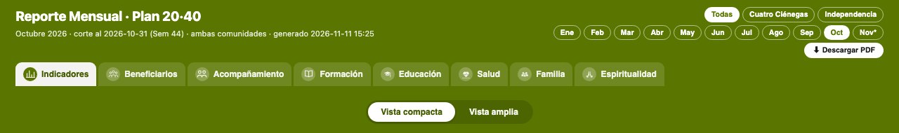
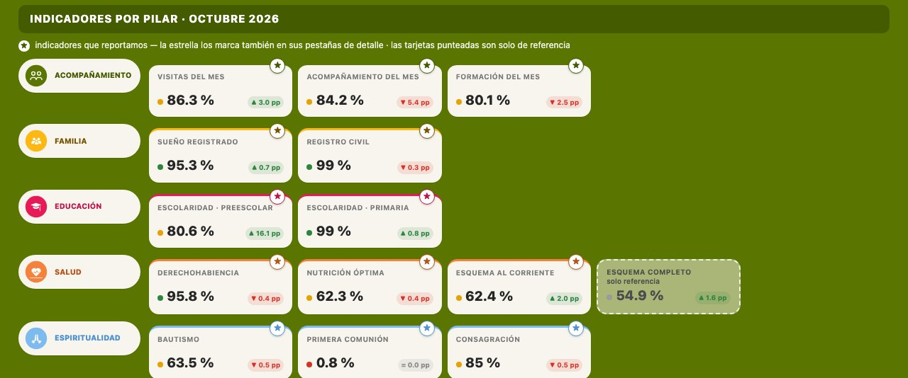
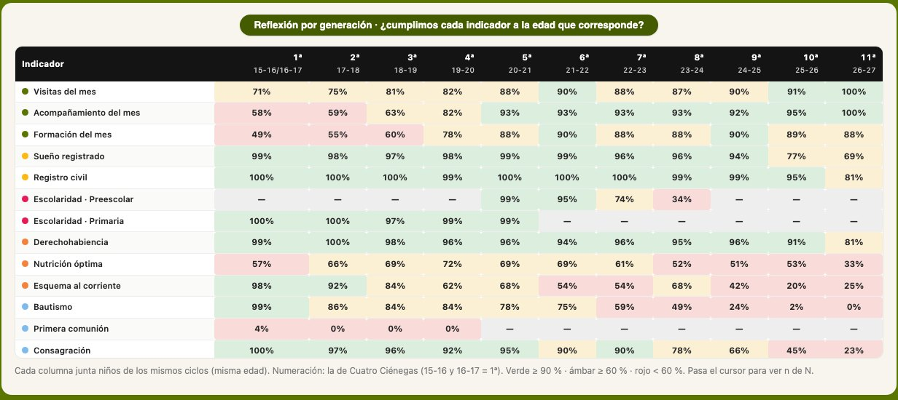

Manual del Reporte Mensual
Qué mide el Reporte Mensual, de dónde salen sus números y cómo leer cada indicador, explicado para quien lo abre por primera vez.
1¿Para qué sirve?
Es la foto completa del Plan al cierre de cada mes: qué porcentaje de los niños P2040 cumple cada indicador de los cinco pilares (acompañamiento, familia, educación, salud y espiritualidad). Se revisa en la reunión mensual para ver qué mejoró, qué empeoró y dónde enfocar el siguiente mes.
Este manual se centra en la pestaña Indicadores, la que más se usa. Las demás pestañas (Beneficiarios, Acompañamiento, Formación, Educación, Salud, Familia y Espiritualidad) abren cada tema con más detalle.
2¿De dónde viene la información?
Todo sale del CRM, lo que capturan las guías en cada visita.
3Cómo moverte en el reporte

- El renglón gris bajo el título dice qué estás viendo: el mes, la fecha de corte, la comunidad y cuándo se generó.
- Todas · Cuatro Ciénegas · Independencia: elige la comunidad. Todo el reporte se recalcula.
- Ene … Nov: elige el mes. El mes con * es el que va en curso (todavía no cierra).
- Las pestañas (Indicadores, Beneficiarios, Acompañamiento…) cambian de tema.
- Vista compacta / amplia: la compacta es la de la reunión; la amplia agrega las barras de cada mes para ver la tendencia.
- Descargar PDF baja el reporte en PDF, para mandarlo o imprimirlo.
4Cómo se lee una tarjeta

- El porcentaje grande es el resultado del mes: de cada 100 niños que deberían cumplir, cuántos cumplen.
- El puntito de color es el semáforo (verde, ámbar o rojo, ver abajo).
- La etiqueta con flechita compara contra el mes anterior en puntos porcentuales (pp): «▲ 3.0 pp» quiere decir que subió 3 puntos, por ejemplo de 83.3 % a 86.3 %.
- La ⭐ marca los indicadores que reportamos oficialmente. Las tarjetas con borde punteado son solo de referencia.
- Al dar clic en una tarjeta se abre su historia mes por mes.
5Los 12 indicadores, en palabras sencillas
Cada indicador es una división: quiénes cumplen entre quiénes deberían cumplir. La columna de la derecha dice quiénes entran en la cuenta.
| Indicador | Qué mide | Quiénes entran en la cuenta |
|---|---|---|
| Acompañamiento | ||
| Visitas del mes | Niños que tuvieron una visita formativa en el mes. | Niños de familias que se visitan cada mes. Las familias bimestrales no entran (desde octubre 2026; antes contaban todos). |
| Acompañamiento del mes | Niños que recibieron cualquier atención en el mes: visita, seguimiento, caso, programa o medición de nutrición. | Todos los niños P2040 activos. |
| Formación del mes | Niños que recibieron un tema de formación en el mes, ellos o su familia, durante una visita. | Todos los niños P2040 activos. |
| Familia | ||
| Sueño registrado | Niños con su «mi sueño» capturado en el CRM. | Todos los niños P2040 activos. |
| Registro civil | Niños registrados ante el registro civil. | Todos los niños P2040 activos. |
| Educación | ||
| Escolaridad · Preescolar | Niños en edad de preescolar que están estudiando (cursando, preinscritos o confirmados). | Niños de 3 a 5 años cumplidos al 31 de diciembre del año en que empezó el ciclo (regla de la SEP). |
| Escolaridad · Primaria | Niños en edad de primaria que están estudiando. | Niños de 6 a 11 años, con la misma regla de la SEP. |
| Salud | ||
| Derechohabiencia | Niños que tienen seguro médico. | Todos los niños P2040 activos. |
| Nutrición óptima | Niños en verde según la Cartilla Nacional de Salud. | Solo niños con una medición de peso y talla de los últimos 12 meses. |
| Esquema al corriente | Niños sin vacunas pendientes que todavía se puedan aplicar, según los Lineamientos 2026. | Todos los niños P2040 activos. |
| Espiritualidad | ||
| Bautismo | Niños bautizados. | Niños P2040 activos católicos. |
| Primera comunión | Niños con primera comunión. | Niños católicos de 7 años o más. |
| Consagración | Niños con al menos una consagración (Sagrado Corazón o Virgen de Guadalupe). | Niños P2040 activos católicos. |
6La tabla por generación

Debajo de las tarjetas está esta tabla. Cada renglón es un indicador y cada columna una generación: niños de los mismos ciclos, es decir, de la misma edad. La 1ª es la más grande y la 11ª la más pequeña (la numeración es la de Cuatro Ciénegas).
Sirve para ver en qué edad se cae un indicador. Por ejemplo, si Nutrición óptima está en verde en las generaciones grandes y en rojo en las pequeñas, el foco está en los más chiquitos. Los colores usan el mismo semáforo, y al pasar el cursor sobre una celda ves cuántos niños cumplen de cuántos.
Un guion «—» quiere decir que ese indicador no aplica a esa edad (por ejemplo, primera comunión en niños menores de 7 años).
7Preguntas frecuentes
¿Por qué el mes en curso cambia de un día para otro?
Porque todavía no cierra: muestra la descarga más reciente del CRM, y cada semana entran visitas y capturas nuevas. El número final queda al cierre del mes.
¿Por qué «Visitas» no cuenta a todos los niños?
Desde octubre 2026 se mide contra las familias que se visitan cada mes. Las familias bimestrales se visitan un mes sí y otro no, así que contarlas haría ver como pendiente algo que no tocaba.
¿Qué quiere decir «pp»?
Puntos porcentuales: la diferencia directa entre dos porcentajes. Si un indicador pasa de 80 % a 85 %, subió 5 pp.
¿Por qué un indicador bajó si trabajamos igual?
Revisa dos cosas: si entraron niños nuevos al padrón (el denominador crece y el porcentaje baja aunque nadie haya dejado de cumplir) y si faltan capturas en el CRM. El reporte refleja lo que está capturado.
¿Coincide con el One Page y el Tablero de Metas?
Sí: los cuatro reportes (Mensual, Semanal, One Page y Tablero de Metas) usan exactamente las mismas reglas. Si ves una diferencia, revisa que estés comparando el mismo mes y la misma comunidad.
8Glosario
- P2040
- Niño o niña del Plan 20·40, la población principal que se acompaña.
- Activo
- Niño con estatus activo en el CRM a la fecha del corte. Los inactivos no entran en las cuentas.
- Corte
- La descarga del CRM con la que se calcula un mes; la del último día del mes es el «cierre».
- Familia mensual / bimestral
- Según su esquema, una familia se visita cada mes o cada dos meses.
- Generación
- Grupo de niños nacidos en los mismos ciclos; agrupa por edad.
- pp
- Puntos porcentuales: diferencia directa entre dos porcentajes.
- Denominador
- Los que «deberían cumplir»: el número de abajo en la división.